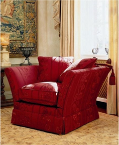

Parker & Farr
上世纪的70年代，Parker先生和Farr先生决定创建一家以生产高品质、量身定制的沙发工厂，将手工打造的精神发挥到极致，在英国得到了家具中的“Bentley”的美誉。工厂坐落在伦敦北面的达诺丁汉郡，通过设计师们的推荐，客人包括欧洲皇室贵族、摇滚明星、足球明星、名流政要，在伦敦的 Harrods 百货公司也有P+F的销售专柜。
P+F沙发的精细手工，不仅是品质的保证，也是鉴别这个品牌的唯一特点。五十年来，他们一直坚持保存传统手艺。来自全世界美丽的织品，在工匠的巧手之下，做出令人激赏的英式沙发。P+F手工沙发满足个人专属的规格，剪裁、对花拼接都能完全遵照客人的要求。即使订制沙发的布料来自客人，P+F也有搭配的饰边。庞大的存料库提供了完整的色彩选择性，这就是何以P+F专业的原因。P+F布料裁剪加工考虑更多的细节。所有的缝边都先行烫平才能缝製，饰边、裙摆全是手工针线的杰作。沙抱枕布套也都装上隐藏式拉链，便利换洗。所有P+F沙发木结构框架都是经过仔细榫接黏合、螺丝拴紧，提供了无比强度。完成沙发款式框架后，进而装上标准弹簧，覆上黄麻布、黄麻绳网固定，填充天然棉花棉料、高密度泡棉等。高级的天然材料保证了乘坐的舒适。P+F沙发的舒适不能言喻，只能亲身体会。
